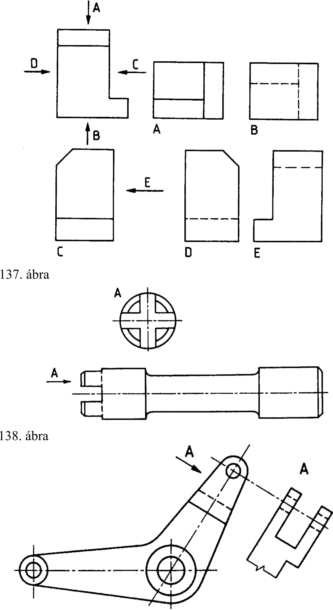

7. Ábrázolási különlegességek 7. Ábrázolási különlegességek 7.1. Nézetek elhelyezése az európai és amerikai vetítési módtól eltérően A szabványos nézetrendek közös jellemzője az, hogy az elölnézetet tekintjük főábrának , és a vetületet úgy helyezzük el, hogy a főábrán felismerhető függőleges irány az oldalnézeteken és a hátulnézeten is függőlegesnek látszódjék. Ezt kell egyéb vetületrendezésnél is betartani. Ha az európai és az amerikai vetítési mód alkalmazása nem lehetséges (pl. helyszűke miatt), vagy nem előnyös, akkor a nézési irányt mutató nyilak feltüntetésével a nézetek tetszés szerint elhelyezhetők (137. ábra). Az így azonosított nézeteket a főnézettől függetlenül helyezhetjük el. A nézeteket azonosító nagybetűket közvetlenül a nézetrajz alá vagy fölé lehet írni, de egy rajzon belül mindig azonos módon. Az így készített rajzon az európai vagy az amerikai vetítési mód egyezményes megkülönböztető jelképeit nem szükséges feltüntetni. 7.2. Különleges (a nézetrendtől eltérő) nézetek Az európai nézetrend szerint megrajzolt viszonylag hosszú főábra vége és a hozzá kapcsolt oldalnézet összetartozó részletei egymástól távol vannak, így nehezen tekinthetők át. Ezért célszerű lehet az oldalnézetet a nézési iránynak megfelelően a főábra megfelelő részének közelében elhelyezni. Az oldalnézet azonosítására betűjelet kell használni (138. ábra). Ha a nézetrendekben felsorolt nézetektől (elölnézet, felülnézet, balnézet stb.) eltérő nézetre van szükség, akkor az ábra a nézési irányt mutató nyíllal és azonosító betűvel azonosítható az előzőekben tanultak szerint. Ezt az ábrázolási módot alkalmazzuk ferde helyzetű részleteket tartalmazó tárgyak ábrázolásakor (139. ábra). A villás kialakítás mérethelyesen olyan ferde segéd képsíkon ábrázolható, amely a megmutatni kívánt felülettel párhuzamos. Ezt a résznézetet a vetítés irányában kell elhelyezni, nyilazott vonallal és betűjellel jelölni kell. Ez a megoldás akkor is, amikor a ferde részletet elcsúsztatva vagy elfordítva ábrázoljuk a főábrához viszonyítva (140. ábra). 7.3. Résznézetek (részletek) Résznézetről akkor beszélünk, ha a teljes nézetnek csak egy részét rajzoljuk meg, és a semmitmondó, új információt nem tartalmazó részét elhagyjuk. A résznézetet folytonos vékony, szabadkézi törésvonallal vagy folytonos vékony egyenes törésvonallal kell határolni (141. ábra). 140. ábra 141. ábra 39
